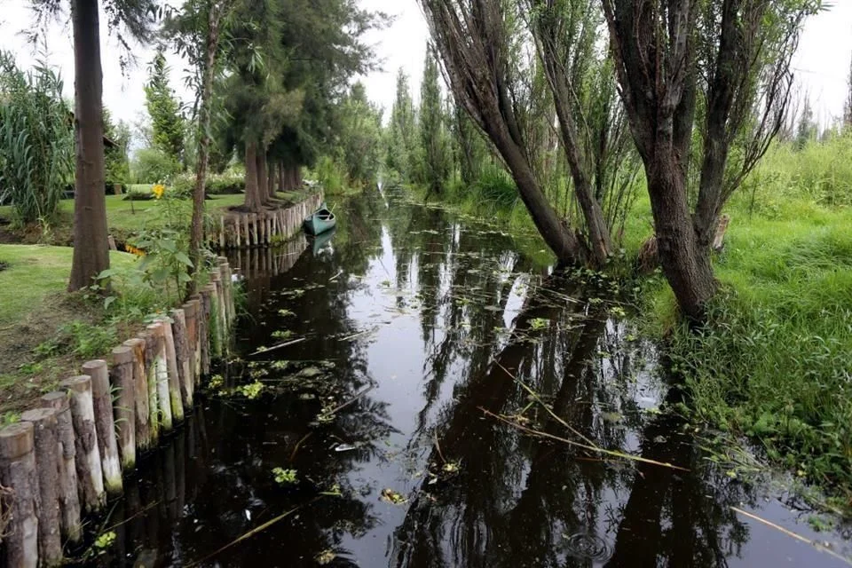

Hábitat
Origen: Son 100% mexicanos y endémicos del sistema de canales de Xochimilco, en la Ciudad de México. Ambiente:Viven en aguas frías y poco profundas, prefiriendo zonas con abundante vegetación acuática para esconderse y poner sus huevos.